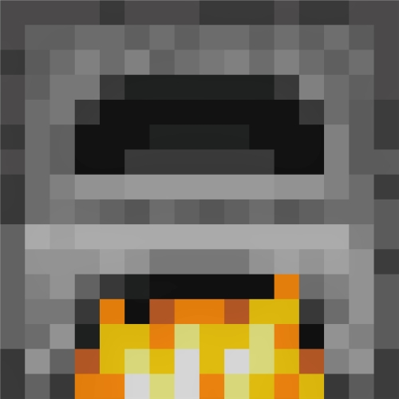

Furnace
A furnace in Minecraft is a quintessential tool for cooking: it can be used to cook raw meats to prevent your character from getting sick upon consumption, or even putting in sand to create glass! However, furnaces need fuel, and electricity is not quite an element in Minecraft. However, this can be remedied by finding coal, which is represented in the game by a stone looking block with what seems to be black rocks inside of it. All you need is a wood pickaxe to mine this coal- but be careful! If you attempt to break this block without any sort of pickaxe, you will not receive the rewards. Coal can be used to fuel the furnace so that it is able to cook for a short duration, depending on how many pieces of coal you put in the furnace.
Iron
Iron is a valuable resource obtained by smelting iron ore in a furnace. Iron ore is a reddish-brown block found deep underground. Smelting one iron ore will yield one iron ingot. Iron ingots are used to craft a vast array of tools, armor, and weaponry, making them essential for progression.
Gold
Gold ore, a bright yellow block found underground, can be smelted in a furnace to create gold ingots. While not as durable as iron, gold ingots have their uses. They can be crafted into tools and armor, though these golden implements are more for show than practicality due to their lower durability. Gold is also a valuable trading commodity with villagers.
Food
Most raw meat obtained from passive mobs can be cooked in a furnace to create cooked food. Raw pork, beef, mutton, and chicken can all be transformed into their cooked counterparts, which restore more hunger points than their raw versions. Cooking meat also eliminates the risk of food poisoning from consuming raw meat.
Charcoal
Charcoal is a versatile fuel source for your furnace. It can be obtained by smelting wood logs in a furnace. While wood logs can be used as fuel, charcoal burns for much longer, making it a more efficient fuel source. Charcoal can also be used to craft torches for nighttime illumination.
Glass
Glass, a transparent block used for windows and decorative purposes, can be crafted by smelting sand in a furnace. Sand is a readily available resource found in deserts and on beaches. Smelting sand will transform it into glass blocks, which can be arranged to create windows, allowing natural light to illuminate your builds.
Stone
Stone, a fundamental building block, can actually be obtained by smelting cobblestone in a furnace. Cobblestone is a gray block commonly found near bodies of water and underground. Smelting one cobblestone will yield one smooth stone block. While both cobblestone and smooth stone can be used for building, smooth stone offers a more polished aesthetic.
Brick
Bricks, used for a more aesthetically pleasing and fire-resistant alternative to cobblestone, are not directly smelted in a furnace. Instead, clay blocks, found near water bodies, can be molded into clay balls and then baked in a furnace to create bricks. Bricks can then be used for crafting and construction purposes.